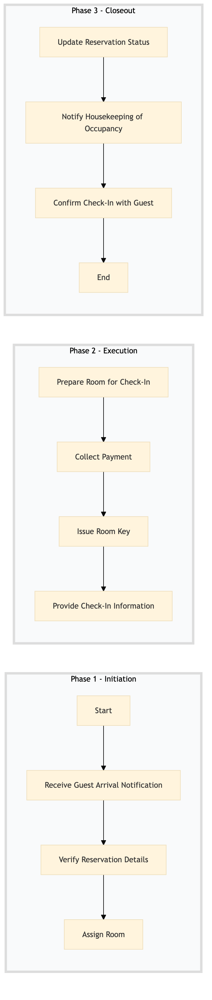

| Role | Steps |
|---|---|
| Front Desk Agent | 1.1 1.2 1.3 2.1 2.2 2.3 3.1 3.3 |
| Housekeeping Supervisor | 1.4 3.2 |
| Step | Name | Role | System | Input | Output | KPI | Dec? | Exc? | Pain Point / Risk |
|---|---|---|---|---|---|---|---|---|---|
| 1.1 | Receive Guest Arrival Notification | Front Desk Agent | Oracle OPERA Cloud | Reservation details or walk-in information | Acknowledgment of arrival | Less than 2 minutes | N | Y | Handling last-minute changes in reservations |
| 1.2 | Verify Reservation Details | Front Desk Agent | Oracle OPERA Cloud | Guest identification documents | Confirmed reservation details | Less than 3 minutes | Y | N | Dealing with expired reservations |
| 1.3 | Assign Room | Front Desk Agent | Oracle OPERA Cloud | Room availability data | Assigned room number | Less than 2 minutes | N | Y | Handling no available rooms |
| 1.4 | Prepare Room for Check-In | Housekeeping Supervisor | Oracle OPERA Cloud, Honeywell INNCOM | Assigned room number | Room ready for occupancy | Less than 10 minutes | Y | N | Ensuring room cleanliness and amenities |
| 2.1 | Collect Payment | Front Desk Agent | Oracle OPERA Cloud, SynXis CRS | Guest payment method | Payment confirmation | Less than 5 minutes | Y | N | Handling cash payments and change |
| 2.2 | Issue Room Key | Front Desk Agent | Oracle OPERA Cloud, Assa Abloy VingCard | Assigned room number | Room key | Less than 1 minute | N | Y | Replacing lost or damaged keys |
| 2.3 | Provide Check-In Information | Front Desk Agent | Oracle OPERA Cloud, Marriott Bonvoy CRM | Guest preferences and amenities | Check-in information sheet | Less than 2 minutes | Y | N | Communicating complex hotel policies |
| 3.1 | Update Reservation Status | Front Desk Agent | Oracle OPERA Cloud, IDeaS G3 RMS | Check-in confirmation | Updated reservation record | Less than 1 minute | N | Y | Handling system downtime |
| 3.2 | Notify Housekeeping of Occupancy | Housekeeping Supervisor | Oracle OPERA Cloud, Honeywell INNCOM | Occupied room number | Occupancy update | Less than 1 minute | Y | N | Updating multiple systems simultaneously |
| 3.3 | Confirm Check-In with Guest | Front Desk Agent | Oracle OPERA Cloud, Marriott Bonvoy CRM | Guest feedback | Check-in confirmation | Less than 2 minutes | N | Y | Handling guest complaints |
The FO-CI-02 process involves checking in guests and assigning rooms at a full-service Marriott hotel using Oracle OPERA Cloud PMS. This ensures smooth operations and guest satisfaction.